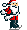
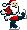

Happy Christmas
Happy Christmas é um jogo estilo plataforma para DOS, desenvolvido e publicado em dezembro de 1997. O site original já não existe mais, mas é possível visualizar uma cópia do site na Wayback Machine.
Em abril de 2016, o jogo foi recompilado para Windows. O código-fonte foi modificado para triplicar a resolução original de 320x200 pixels.
Abaixo, uma cópia do site original (links quebrados).
Happy Christmas
Agradecimentos
by Rodrigo Rocha Gomes e Souza
Finalmente está pronto! Este
é o meu primeiro jogo em C, e meu primeiro jogo nesse estilo. Eu
acho que, como início, não está nada ruim. Claro,
não é nenhum Super Mario, mas alcança os objetivos.
Este jogo (ou melhor, sonho) só
foi possível graças a:
-
D.J. Delorie pelo
ótimo compilador DJGPP;
-
Shawn Hargreaves
pela super completa biblioteca Allegro;
-
Ari Feldman
pelos sprites grátis;
-
Felipe Goulart
<samar@sercomtel.com.br>
e Eduardo Côrrea Polastro
<educp@prover.com.br> pelo
interesse em fazer algumas fases para o jogo;
-
Sites na Internet
que disponibilizam imagens, músicas e fontes de Natal.
Muito obrigado, pessoal!
Happy Christmas
O jogo
by Rodrigo Rocha Gomes e Souza
Happy Christmas
é um jogo que foi feito para o Natal
de 1997, com o objetivo de desejar um Feliz
Natal para todos.
Eis algumas características
do jogo:
-
Gráficos VGA (320x200, 256 cores)
-
Música de fundo em todas as
fases
-
Efeitos sonoros
-
Estilo Super Mario
-
É natalino
Clique aqui
para ver uma tela do jogo (.GIF,
7.8K)
Clique aqui
para ouvir uma música do jogo (.MID,
35.5K)
Clique aqui
para ouvir um som do jogo (.WAV,
17.8K)
Agora que você já sabe
um pouquinho sobre o jogo, que tal jogá-lo?
Happy
Christmas (640 kb)
Fases
adicionais (5 kb)
E mais! Como passar da 1ª
fase!
Happy Christmas é
Copyright (C) 1997 Rodrigo Rocha Gomes e Souza.
Todos os direitos reservados.
E-mail para contato: xrod@xrod.cjb.net